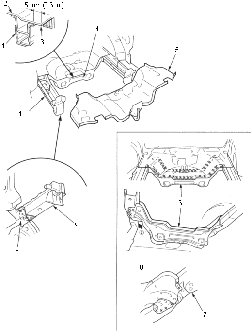

Rear Floor
Removal
3-64
Cut the rear floor 15 mm (0.6 in.) from the welded flange of the rear floor cross-member.
Id necessary, replace the rear frame B.
Check the rear floor cross-member position and for damage.
If necessary, replace the rear floor cross-member.

REAR FLOOR CROSS-MEMBER
REAR FLOOR
Cut line
REAR FLOOR CROSS-MEMBER
REAR FLOOR
REAR FLOOR CROSS-MEMBER
REAR FRAME A
VIEW (Z)
REAR FRAME B
REAR FRAME A
REAR FRAME B